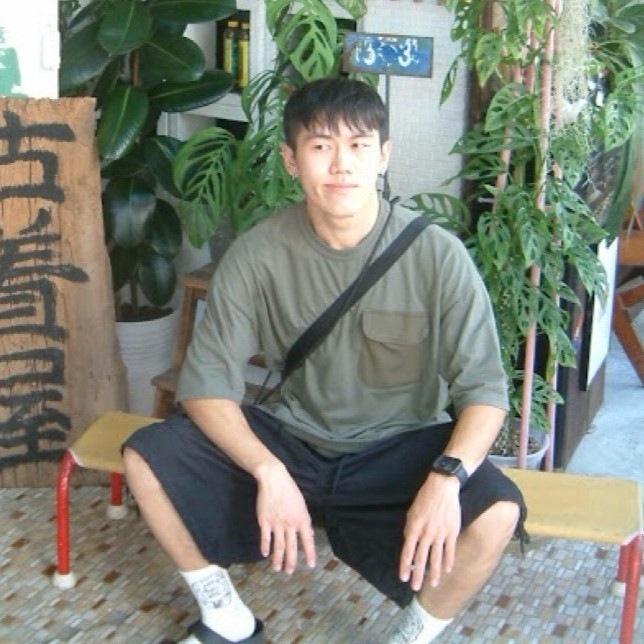

廖晨均 David
A109070256
探索生活，追尋音樂之旅。
信箱:a109070256@mail.shu.edu.tw
嗨，大家好！我是廖晨均，來自世新大學資訊傳播學系的大四生。除了學業之外，我有著多元的興趣和熱情。平常喜歡逛街，探索城市的潮流風貌，也喜歡旅遊，走訪不同的地方體驗異國風情。看海是我放鬆心情的好方式，海風拂面，海浪拍岸，讓我感受到大自然的宏偉與寧靜。攝影是我捕捉生活中美好瞬間的工具，喜歡用鏡頭記錄下身邊的景色和人物。而最近，我更是迷上了參加音樂祭，已經去過大港、台灣祭、新北河海、海祭以及赤聲躁動等多個音樂祭，每一次的體驗都讓我充滿了活力和樂趣。未來，我將繼續參加更多的音樂祭，如果你也喜歡音樂祭，歡迎認識一起參加，讓我們一同享受音樂的魅力！期待與各位有更多的交流和互動，共同創造美好的回憶和經歷！
這是一段測試465465